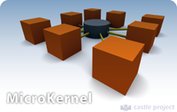
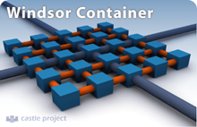

Table of contents
MicroKernel/Windsor
Castle MicroKernel is an inversion of control container that was designed towards extensibility. It combines facilities to grow orthogonally. These facilities work side-by-side, without interfering or depending on each other, to allow you to easily extend the container functionality by plugging in new concerns and semantics.
|  | Castle MicroKernel is the core of the embeddable inversion of control container Castle Project offers. You can use it as an embeddable container on tools that support extensions or plugin support, such as tools which exposes configurable pipelines or compilers. The container is set up and configured through code. |
|  | Castle Windsor aggregates the MicroKernel and exposes a powerful configuration support. It is suitable for common enterprise application needs. |
Why would I use it?
The Castle MicroKernel and Castle Windsor are good options if you are fond of the Inversion of Control principle. This happens a lot to developers that come from the Java camp.
The MicroKernel is undoubtably the most extensible container for .Net. This is a high point as you can use it as the rendezvous for frameworks your company has, combining them.
IoC containers favors reuse as they allow you to use a natural idiom to expose the component's dependencies. This allow components to be used with or without containers. Hence you quickly end up with a library of reusable components that can be shared among projects, as long as you apply the Separation of Concerns principle.
Why would I not use it?
You should not use an Inversion of Control container if you are not familiar with the concepts and if you do not realize the problems they try to solve.
Also, depending on the size and complexity of the project, an IoC container might be overkill. Prefer to use it on medium to large projects.
Version
The latest Castle Inversion of Control package release is 1.0 Release Candidate 3.
Content
The following pages compose the Castle MicroKernel/Windsor portion of this web site.